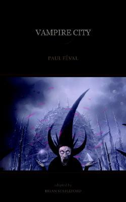
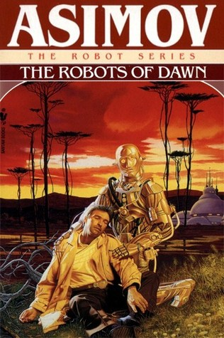
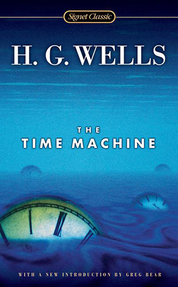
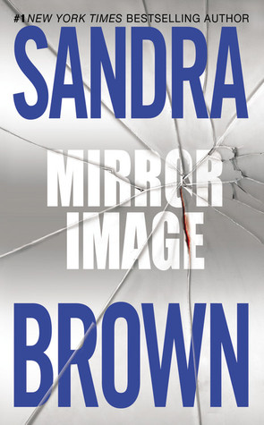

<!doctype html>
<html>
    <title>Science Fiction</title>
    <link rel="stylesheet" href="main.css">
</html>
<body>
    <nav>
        <label class="logo">Science Fiction</label>
        <ul class="nav-links">
            <li><a href="index.html">Home</a></li>
            <li><a href="book.html">Adventure</a></li>
            <li><a href="book2.html">Thriller</a></li>
            <li><a href="book3.html">Horror</a></li>
            <li><a href="book4.html">Humour</a></li>
            <li><a href="book5.html">Mystry</a></li>
        </ul>
    </nav>
    <table cellspacing="20px">
        <tr>
            <td>
                <details>
                    <summary>Introduction</summary>
                      <p>
                        Some tell of a great city of black jasper which has streets and buildings like any other city but is eternally in mourning, enveloped by perpetual gloom. Some call it Selene, some Vampire City, but the vampires refer to it among themselves by the name of the Sepulchre... To destroy the dreaded vampire lord Otto Goetzi, writer Ann Radcliffe, Merry Bones the Irishman, and Grey Jack her faithful servant, launch an all-out attack on Selene... "We can easily see in Vampire City the ultimate literary ancestor of Buffy the Vampire-Slayer."-Brian Stableford. Paul F?val (1816-1887) was the author of numerous popular swashbuckling novels and one of the fathers of the modern crime thriller. Brian Stableford has published more than fifty novels and two hundred short stories. Vampire City was written in 1867-thirty years before Bram Stoker's Dracula-and is one of three classic vampire stories also available from Black Coat Press.
                    </p>     
                    
                </details></td>
            
            <td class="a">
                <h3>Vampire City</h3>
                <p>Brain Stableford</p>
                <a class="btn1" href="order.html">Purchase</a>
            </td>
        </tr>
        <tr>
            <td>
                <details>
                    <summary>Introduction</summary>
                      <p>
                        A millennium into the future two advances have altered the course of human history: the colonization of the Galaxy and the creation of the positronic brain. Isaac Asimov's Robot novels chronicle the unlikely partnership between a New York City detective and a humanoid robot who must learn to work together.
                     </p>     
                    
                </details></td>
            <td class="a">
                <h3>The Robots of Dawn</h3>
                <p>Isaac Asimov</p>
                <a class="btn1" href="order.html">Purchase</a>
            </td>
        </tr>

        <tr>
            <td><details>
                <summary>Introduction</summary>
                  <p>
                    “I’ve had a most amazing time....”

                    So begins the Time Traveller’s astonishing firsthand account of his journey 800,000 years beyond his own era—and the story that launched H.G. Wells’s successful career and earned him his reputation as the father of science fiction. With a speculative leap that still fires the imagination, Wells sends his brave explorer to face a future burdened with our greatest hopes...and our darkest fears. A pull of the Time Machine’s lever propels him to the age of a slowly dying Earth.  There he discovers two bizarre races—the ethereal Eloi and the subterranean Morlocks—who not only symbolize the duality of human nature, but offer a terrifying portrait of the men of tomorrow as well.  Published in 1895, this masterpiece of invention captivated readers on the threshold of a new century. Thanks to Wells’s expert storytelling and provocative insight, The Time Machine will continue to enthrall readers for generations to come.
                </p>
            </details></td>
            <td class="a">
                <h3>The Time Machine</h3>
                <p>Carlo Pagetti</p>
                <a class="btn1" href="order.html">Purchase</a>
            </td>
        </tr>

        <tr>
            <td>
                <details>
                    <summary>Introduction</summary>
                      <p>
                        When a TV reporter is injured in a Dallas-bound jet crash, she enters a world of mistaken identity and political intrigue in this action-packed romantic suspense novel -- a Globe and Mail bestseller!
The crash of a Dallas-bound jet isn't just a tragedy for TV reporter Avery Daniels; it's an act of fate that hands her a golden opportunity to further her career. But it also makes her the crucial player in a drama of violent passions and deadly desires.

After plastic surgery transforms her face, Avery is mistaken for the glamorous, selfish wife of Tate Rutledge, the famous senatorial candidate and member of a powerful Texas dynasty.

As she lays helpless in the hospital, Avery makes a shattering discovery: someone close to Tate planned to assassinate him. Now, to save him, she must live another woman's life -- and risk her own.
</p>
</details></td>
            <td class="a">
                <h3>Mirror Image</h3>
                <p>Sandra Brown</p>
                <a class="btn1" href="order.html">Purchase</a>
                
            </td>
        </tr>
    </table>
</body>